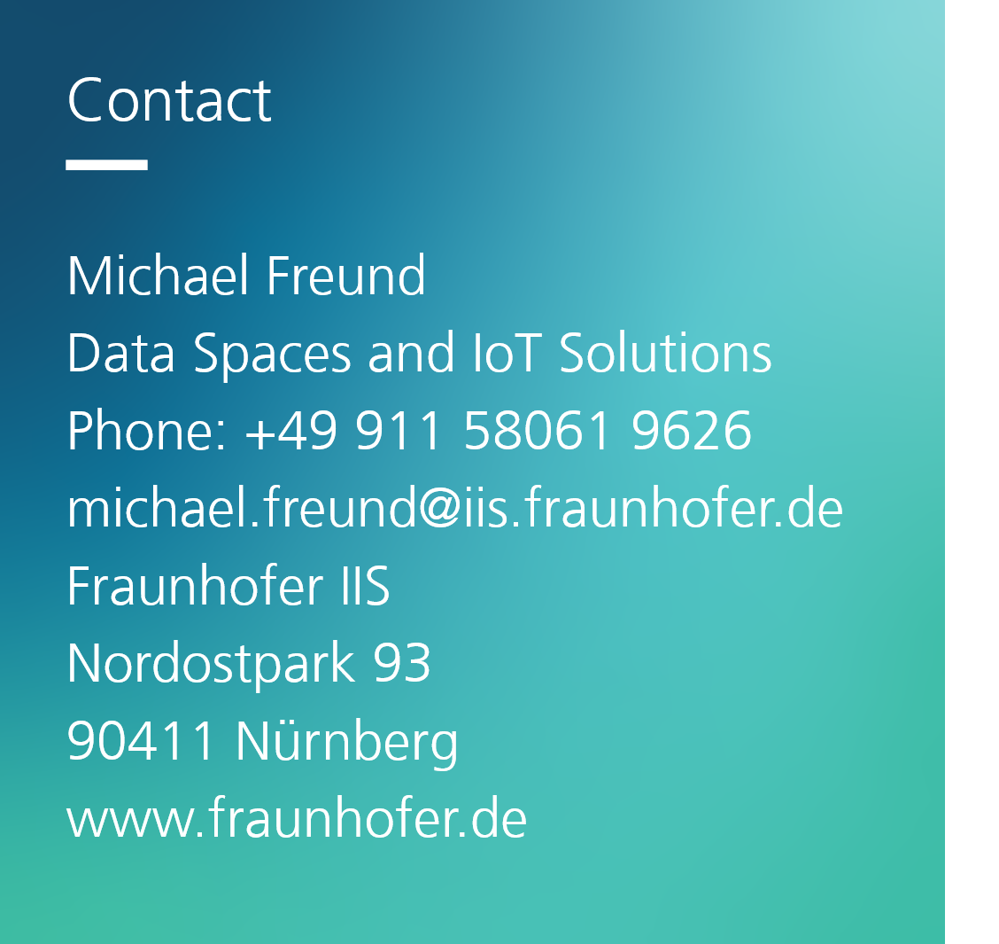

1. Introduction
- Connected devices have a wide variety of applications in the industry [1]
- The Web of Things (WoT) is a standard to create applications for connected devices
- The programming languages currently used to access the devices are primarily text-based and difficult for casual users to utilize
- To improve accessibility to WoT-based connected devices we introduce BLAST: A block-based visual programming editor and execution environment
2. BLAST Language
The Language of our block-based visual programming language BLAST- is a mixture of natural and computer language [2]
- has standard elements such as loops, functions, and variables
- includes WoT related blocks grouped under the three interaction affordances properties, actions, and events
- consists of blocks for SPARQL queries and HTTP requests
- contains a block for native JavaScript code

- The example uses two IoT devices to implement a geofencing scenario:
- A LED light with a BLE interface
- A BLE Beacon
- Both devices expose properties that can be read and written (e.g. colour)
- The program is implemented using an event pattern by defining states with conditions
3. BLAST Editor and Execution Environment
environment
- The BLAST editor is based on Google's Blockly library
- BLAST generates and executes JavaScript based on the arrangement of used blocks
- The interaction with devices is based on the Web Bluetooth API and the Web HID API
- We created a WoT interface for eight IoT devices containing metadata and JavaScript code for communication
- Besides IoT devices, the BLAST system supports access to
- a Web Speech API
- HTTP requests using the Fetch API
- Solid based on Inrupt client libraries
- SPARQL queries based on μRDF.js
4. Usability Evaluation
- The System Usability Scale (SUS) questionnaire is used to evaluate the user-friendliness of BLAST
- We conducted an evaluation with nine participants that had no prior knowledge of the system
- Participants were asked to solve four tasks and then fill out the SUS questionnaires
- BLAST achieved a SUS score of 81.4 out of 100 possible points (good usability)
5. Conclusion
- We introduced BLAST, a block-based language and programming environment that simplifies the interaction with IoT devices and web resources
- We are currently working on an execution environment für BLAST programs independent of browsers in node.js